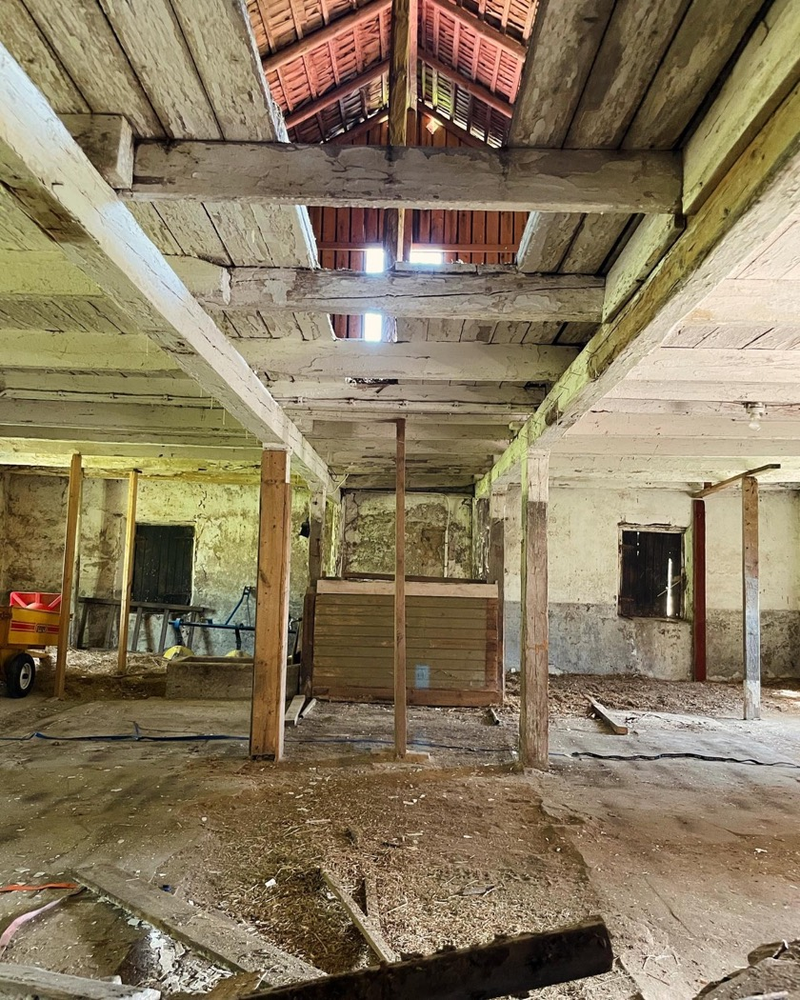
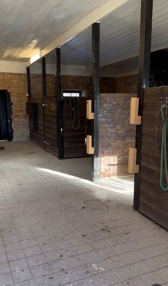

2021
De första månaderna på Heden
I maj 2021 flyttade vi in på Heden. Redan första månaden började jag riva ur det gamla kostallet. När putsen kom ner tittade tegelväggarna fram, men många stenar satt löst och jag fick foga om väggarna. Sedan förberedde vi för vatten och avlopp och göt en ny platta. Under hösten jobbade vi på lediga stunder för att få de första två boxarna klara.

